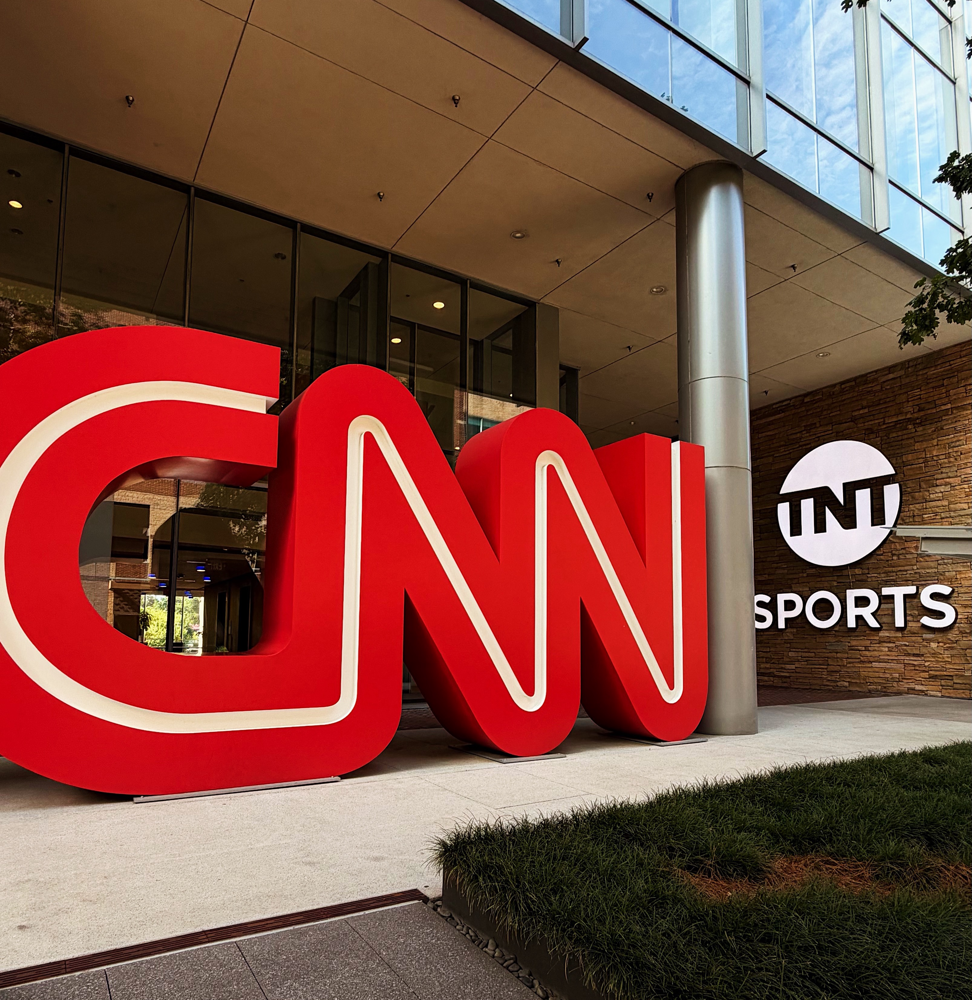
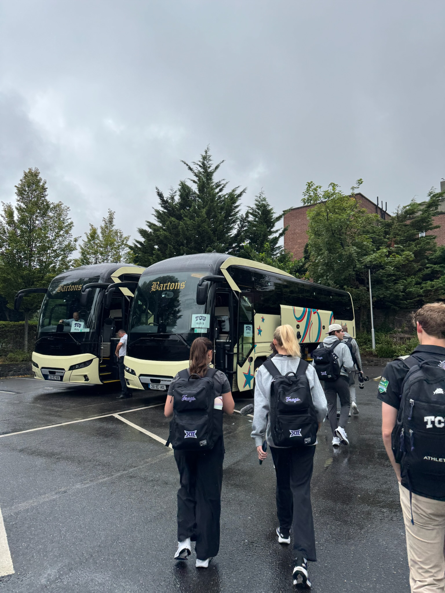
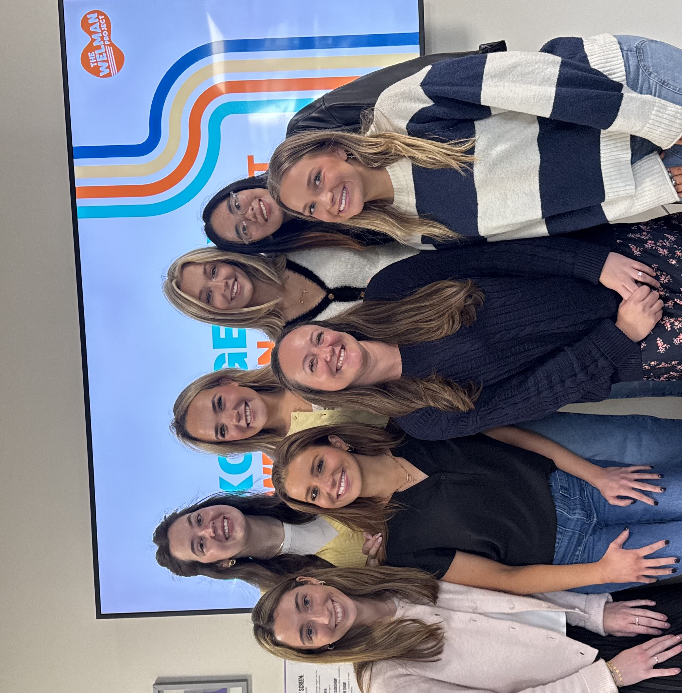
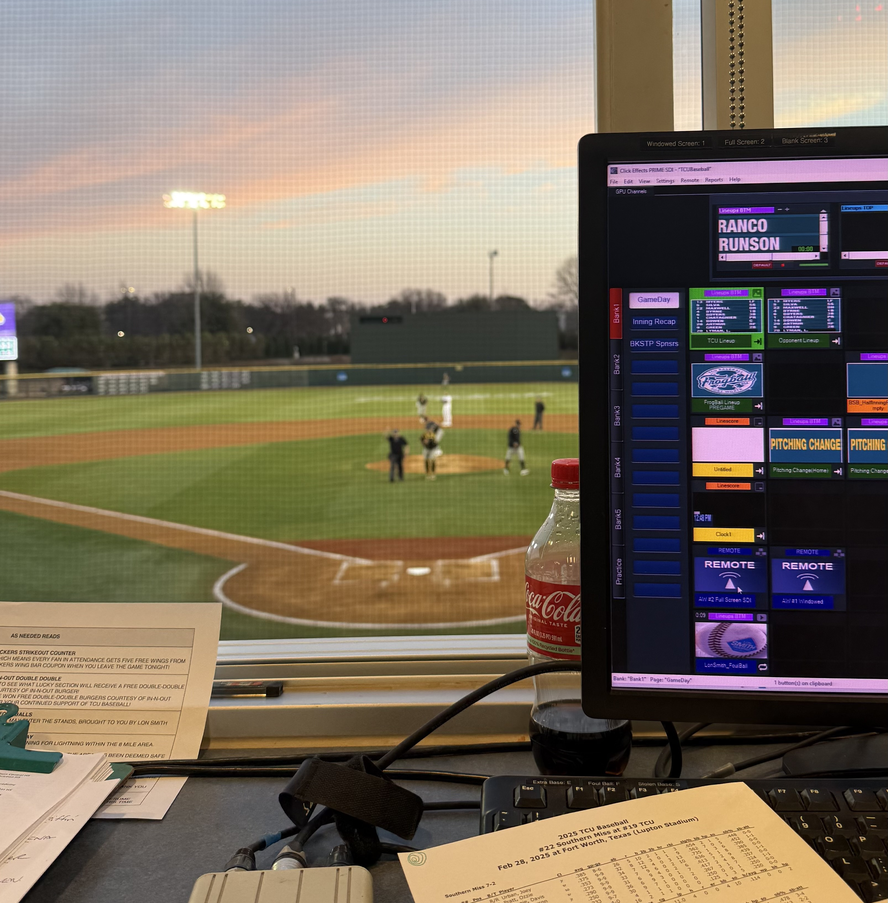

My Work Experience
Internships
Bleacher Report Storytelling Intern
May 2026 – August 2026
Co-produced daily video content for the Storytelling team, coordinating asset gathering, script writing, and communication with creators and editors. Produced video content across the World Cup, tennis, UFC, NFL, college football, and basketball (NBA and WNBA), including NBA Finals coverage, with content distributed across social media and the Bleacher Report app. Independently researched and built an NFL strategy PowerPoint presentation based on prior-season analytics. Attended on-set filming for The Run, a long-form original YouTube series, gaining exposure to live production workflows and working with high-profile talent.

TCU Football Creative Media Intern
March 2025 – Current
Draft, edit, and publish real-time content across Instagram, X, and TikTok, ensuring messaging is clear, accurate, and aligned with brand standards. Travel to away games, including Ireland. Leverage advanced Excel proficiency to track engagement, reach, and growth metrics, building analytics trackers to measure communication effectiveness. Analyze performance data and translate insights into concise reports and recommendations for communications staff. Collaborate cross-functionally with communications, marketing, and operations teams in fast-paced, high-visibility environments.

ROXO Social Media Manager
August 2025 – May 2026
Developed branded messaging and content strategies for local business and nonprofit clients. Produced a full donor-focused video for the Welman Project, supporting storytelling and engagement initiatives. Created and delivered PowerPoint presentations for weekly client meetings and class presentations. Built and delivered 1,000+ reusable branded content templates, enabling long-term consistency and future campaign efficiency.

The Scout Guide Alpharetta Social Media/Advertising Summer Intern
May 2025 – August 2025
Create written and visual content highlighting brand stories and community partnerships. Support editorial planning, client communications, and campaign execution. Assist with vendor coordination and photography logistics to meet deadlines. Contribute to increased engagement and brand visibility across platforms.
Working Experience
TCU Women’s Basketball, Men’s Basketball, and Baseball Operations
November 2024 – Current
Managed live videoboard and media operations during games, supporting real-time fan-facing communications. Managed and executed Instagram Stories for Women’s and Men’s Basketball content on game days, engaging fans with real-time updates. Assisted with logistics and problem-solving during live events, strengthening adaptability and attention to detail in high-visibility settings.
